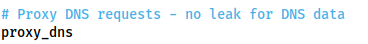
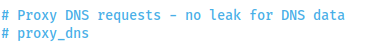

nmap considerations
Proxy DNS settings in
/etc/proxychains.confIf
performing an Nmap scan through proxychains, this option can cause the scan to hang and ultimately crash. Comment
out the proxy_dns line using a hashtag (#) at the start of the line before performing a scan through the
proxy!
Only TCP
ScansYou can only use TCP scans (-sT) with -Pn switch to prevent Nmap to do ICMP Echo packets
(Ping requests) that will also not work through the proxy.
You cannot
use proxychains for:
◇ UDP scans
◇ SYN scans
Very Slow• It will
be extremely slow. Try to only use Nmap through a proxy when using the NSE (i.e. use a static binary to see where
the open ports/hosts are before proxying a local copy of nmap to use the scripts library).
WARNING: TO BE TESTED
TCP scan
Speed-up Nmap through pivoting(source:
https://cheatsheet.haax.fr/network/pivot_techniques/)
seq 1 254 | xargs -P 50 -I{} proxychains nmap -p 80,135,139,443,3389,445,22 -sT -Pn --open -n -T4 --min-parallelism 100 --min-rate 1 --oG proxychains_nmap --append-output 10.100.40.{}
Port scan Ip address
seq 1 1000 | xargs -P 50 -I {} proxychains nmap -p {} -sT -Pn
--open -n -T4 --min-parallelism 100 --min-rate 1 --oG proxychains_nmap --append-output 10.100.40.107